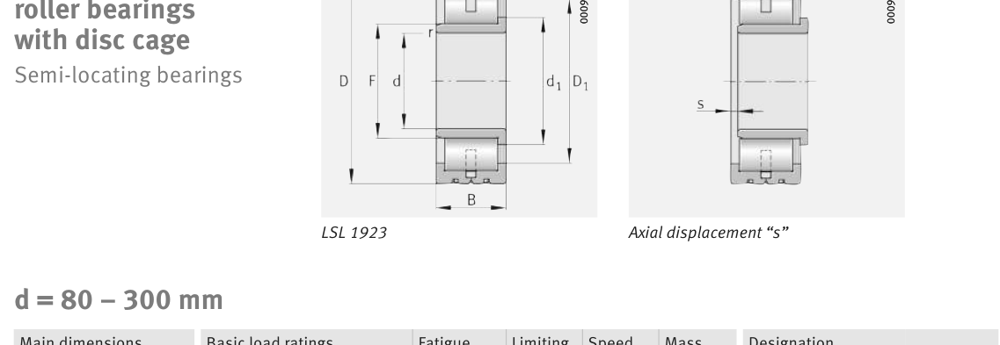

Original catalogue drawing - FAG Schaeffler HR 1, page 494

Scanned from the manufacturer catalogue page listing this part number. All part numbers printed on that table share the same drawing.
Scale cross-section
Blue = inner / outer ring, yellow = rolling element. Drawn to scale from this part's own
dimensions for selection reference only - not a manufacturing or assembly drawing.
Dimension table (mm / inch)
Symbol
Dimension
mm
inch
d
Bore diameter
220
8.6614
D
Outside diameter
460
18.1102
B
Inner-ring / bearing width
145
5.7087
r
Chamfer (min)
5
0.1969
F
Roller-set bore dia.
266.7
10.5
Notes
Weights are given in kg. Load ratings are shown in both the original catalogue units and the converted value (1 N = 0.2248 lbf). Data is provided for selection reference only - confirm against the latest official catalogue before ordering.
Main dimensions
Bore d (mm)
220
Outside dia. D (mm)
460
Width B (mm)
145
Inner-ring OD d1 (mm)
297
Inner-ring shoulder dia. D1 (mm)
385.9
Dimension F (mm)
266.7
Dimension s (mm)
7
Load ratings & speeds
Basic dynamic load rating Cr (lbs)
562022
Basic static load rating Cor (lbs)
719389
Basic dynamic load rating Cr (N)
2.5e+06
Basic static load rating C0r (N)
3.2e+06
Fatigue limit load Cur (N)
330000
Limiting speed nG (rpm)
2,850
Reference speed nB (rpm)
1,270
Weight
Weight (kg)
108.0
Mounting dimensions (fillets / shoulders)
Housing fillet r max (mm)
5
Shaft shoulder da (mm)
266.5
Shaft shoulder dc (mm)
297
Housing shoulder Da (mm)
385.5
Housing fillet ra max (mm)
5
Bearing life (ISO 281 basic rating life)
C / P
Equivalent load P (N)
L10 (106 rev)
L10h at 900 rpm
4
625,000
102
1,881
6
416,667
392
7,268
8
312,500
1,024
18,963
10
250,000
2,154
39,897
15
166,667
8,323
154,138
Basic rating life per ISO 281: L10 = (C/P)10/3 with C = 2,500,000 N. Hours = L10 x 106 / (60n). Life-modification factors for lubrication, contamination and temperature (aISO) are not included.
Source & traceability
Brand
FAG
Source catalogue
FAG / Schaeffler Rolling Bearings HR 1
Catalogue page
p.494 (dimensions)
Load ratings in newtons, fatigue limit load Cur, limiting speed nG and reference speed nB.
Send us the quantity you need and we will come back with price and
lead time, normally within 24 hours. Equivalent parts from other brands can be quoted at the same time.